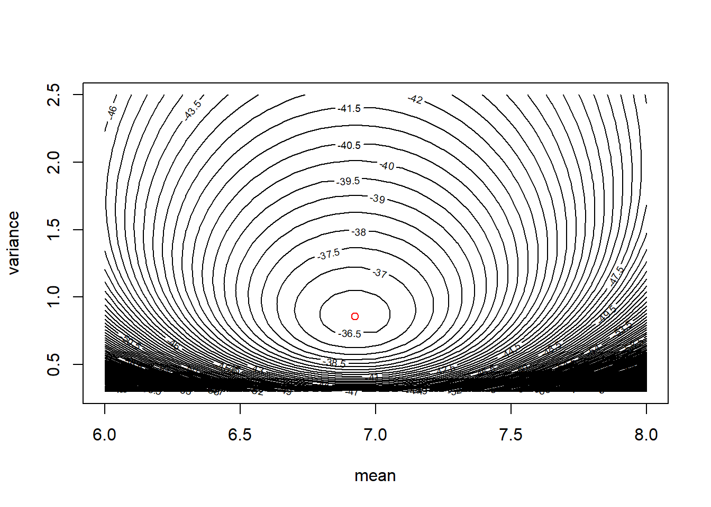

3 Myxomatosis data
The myxomatosis data are in Bolker’s library ‘emdbook.’ First load the library. If the library is not found, you will first have to download and install the library on your computer, using the Packages tab in RStudio.
library(emdbook)
data(MyxoTiter_sum)Inspect the data to make sure they have been imported correctly.
summary(MyxoTiter_sum)## grade day titer
## Min. :1.000 Min. : 2.000 Min. :1.958
## 1st Qu.:3.000 1st Qu.: 4.000 1st Qu.:5.400
## Median :4.000 Median : 8.000 Median :6.612
## Mean :3.604 Mean : 9.564 Mean :6.331
## 3rd Qu.:5.000 3rd Qu.:13.000 3rd Qu.:7.489
## Max. :5.000 Max. :28.000 Max. :9.021head(MyxoTiter_sum)## grade day titer
## 1 1 2 5.207
## 2 1 2 5.734
## 3 1 2 6.613
## 4 1 3 5.997
## 5 1 3 6.612
## 6 1 3 6.810Extract the subset of the data that corresponds to the ``grade 1’’ viral strain.
myxo <- subset(MyxoTiter_sum, grade == 1)
summary(myxo)## grade day titer
## Min. :1 Min. :2.000 Min. :4.196
## 1st Qu.:1 1st Qu.:3.500 1st Qu.:6.556
## Median :1 Median :5.000 Median :7.112
## Mean :1 Mean :5.037 Mean :6.924
## 3rd Qu.:1 3rd Qu.:6.000 3rd Qu.:7.543
## Max. :1 Max. :9.000 Max. :8.499Out of curiosity, let’s make a scatterplot of the titer vs. the day
with(myxo, plot(titer ~ day)) For the sake of this example, we will ignore the apparent (and unsurprising) relationship between titer and day, and instead will consider only the titer data. We will regard these data as a random sample from a normal distribution. For the sake of illustration, we will estimate the mean and variance of the normal distribution using the function in R.
For the sake of this example, we will ignore the apparent (and unsurprising) relationship between titer and day, and instead will consider only the titer data. We will regard these data as a random sample from a normal distribution. For the sake of illustration, we will estimate the mean and variance of the normal distribution using the function in R.
First, we write a function to calculate the log likelihood.
myxo.ll <- function(m, v){
ll.vals <- dnorm(myxo$titer, mean = m, sd = sqrt(v), log = TRUE)
ll <- sum(ll.vals)
return(ll)
}Note that R’s function for the pdf of a normal distribution — — is parameterized by the mean and standard deviation (SD) of the normal distribution. Although it would be just as easy to find the MLE of the standard deviation \(\sigma\), for the sake of illustration, we will seek the MLE of the variance, \(\sigma^2\).
We can use our function to calculate the likelihood for any choice of mean and variance. For example, let’s try \(\mu = 6\) and \(\sigma^2 = 1\).
myxo.ll(m = 6, v = 1)## [1] -47.91229We want to maximize the likelihood using . Unfortuantely, is a little finicky. To use , we have to re-write our function so that the parameters to be estimated are passed to the function as a single vector. Also, by default, performs minimization instead of maximization. We can change this behavior when we call . Alternatively, we can just re-define the function to return the negative log likelihood.
myxo.neg.ll <- function(pars){
m <- pars[1]
v <- pars[2]
ll.vals <- dnorm(myxo$titer, mean = m, sd = sqrt(v), log = TRUE)
ll <- sum(ll.vals)
return(-ll)
}Now we can use :
myxo.mle <- optim(par = c(7, 1), # starting values, just a ballpark guess
fn = myxo.neg.ll)
myxo.mle## $par
## [1] 6.9241029 0.8571471
##
## $value
## [1] 36.23228
##
## $counts
## function gradient
## 55 NA
##
## $convergence
## [1] 0
##
## $message
## NULLNote that the MLE of the variance is \[ \hat{\sigma}^2 = \frac{\sum_i (x_i - \bar{x})}{n}. \] Let’s verify this by calculating the same quantity at the command line:
residuals <- with(myxo, titer - mean(titer))
ss <- sum(residuals^2)
n <- length(myxo$titer)
var.mle <- ss / n
var.mle## [1] 0.8572684Compare this to the answer given by , and to the more usual calculation of
var.usual <- ss / (n - 1)
var.usual## [1] 0.8902403var(myxo$titer)## [1] 0.8902403Try to make a contour plot of the likelihood surface; this is surely not as good as one can do.
m.vals <- seq(from = 6, to = 8, by = 0.05)
v.vals <- seq(from = 0.3, to = 2.5, by = 0.05)
ll.vals <- matrix(nrow = length(m.vals), ncol = length(v.vals))
for (i.m in 1:length(m.vals)) {
for(i.v in 1:length(v.vals)) {
ll.vals[i.m, i.v] <- myxo.ll(m = m.vals[i.m], v = v.vals[i.v])
}
}
contour(x = m.vals, y = v.vals, z = ll.vals, nlevels = 100,
xlab = "mean", ylab = "variance")
# show the MLE
points(x = myxo.mle$par[1], y = myxo.mle$par[2], col = "red")